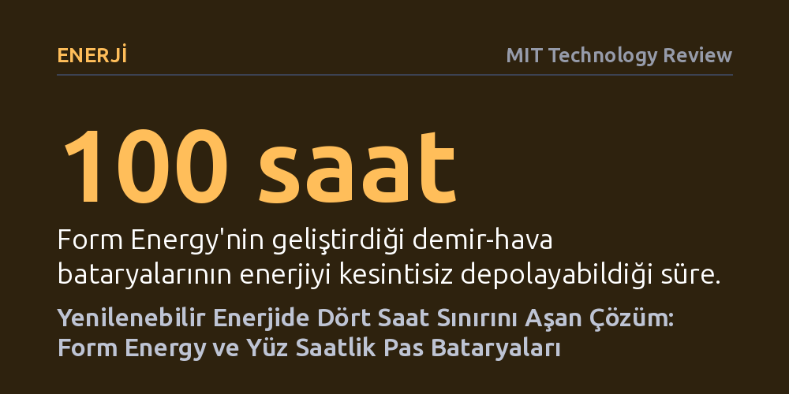

ENERJI · MIT Technology Review · 2026-10-07
Form Energy, yenilenebilir enerjideki kesintileri gidermek için 100 saatlik paslanma temelli demir-hava bataryaları üreterek ticari ölçeğe taşıyor. Teknoloji fosil yakıtlara bağımlılığı ve yapay zekâ veri merkezlerinin emisyonlarını azaltmayı hedeflerken, başarısı devasa üretim hedeflerine ve geniş arazi gereksinimine bağlı.
Güneş ve rüzgârın günlerce süren kesintilerini kapatmak için fosil yakıtlara mahkûm olmadığımızı, ucuz demir-hava bataryalarının temiz şebekeyi mümkün kılabileceğini gösteriyor.

Güneş ve rüzgâr santralleri bugün dünyanın birçok bölgesinde fosil yakıtlardan çok daha ucuza elektrik üretiyor. Ancak bu temiz kaynakların üretimi mevsime, günün saatine ve hava koşullarına doğrudan bağlı olduğundan elektrik şebekesinde ciddi dalgalanmalar yaratıyor. Şebeke operatörleri bu dengesizlikleri yönetebilmek için enerjinin bol olduğu saatlerde şarj olan ve talep arttığında sisteme güç veren batarya depolama sistemlerine her zamankinden daha fazla yatırım yapıyor.
Ne var ki mevcut depolama pazarına mutlak şekilde hâkim olan lityum-iyon bataryalar kritik bir sınırla karşı karşıya. Hafif ve yüksek enerji yoğunluğuna sahip olan bu bataryalar, nikel ve lityum gibi pahalı madenlere ihtiyaç duyuyor ve endüstriyel ölçekte büyütülmeleri yüksek maliyet yaratıyor. Daha da önemlisi, şebekede kullanılan bu büyük bataryaların neredeyse hiçbiri enerjiyi dört ila altı saatten daha uzun süre depolamak üzere tasarlanmıyor. Güneşin günlerce açmadığı veya rüzgârın durduğu dönemlerde şebeke işletmecileri kaçınılmaz olarak doğal gaz santrallerine başvurmak zorunda kalıyor.
Form Energy'nin geliştirdiği teknoloji tam bu boşluğa odaklanıyor. Şirket, hafiflik veya mobilite yerine şebeke ölçeğinde günlerce elektrik saklayabilecek, demir gibi yerkürede son derece bol ve ucuz bir metale dayanan 100 saatlik bir depolama mimarisi sunuyor.
Form Energy’nin geliştirdiği bataryanın merkezinde elektrokimyanın en temel ve yaygın süreçlerinden biri yer alıyor. Şirketin "tersinir paslanma" adını verdiği bu süreç, demirin oksitlenme döngüsünü kontrollü bir enerji depolama mekanizmasına dönüştürüyor. Batarya şebekeye elektrik verirken (deşarj olurken), havadaki oksijeni içeri alarak demir metaliyle tepkimeye sokuyor; demir pasa dönüşürken dış devreye elektron salınıyor.
Şebekede yenilenebilir enerji fazlası oluştuğunda ise süreç tam tersine işletiliyor. Bataryaya verilen elektrik akımı sayesinde oluşan pas yeniden metalik demire dönüştürülüyor ve hapsedilen oksijen havaya geri salınıyor. Pahalı ve kıt metaller yerine yalnızca demir, su ve hava kullanan bu basit elektrokimyasal döngü, enerjinin 100 saat boyunca kayıpsız ve güvenli şekilde saklanmasını mümkün kılıyor.
Lityum bataryalar gibi anlık dalgalanmaları değil, aşırı sıcak hava dalgaları veya dondurucu kış fırtınaları gibi günlerce süren arz-talep krizlerini hedefleyen bu tasarım, birim kilowatt-saat maliyetini doğal gaz santralleriyle rekabet edebilecek seviyelere çekmeyi hedefliyor.
Son iki yılda laboratuvar aşamasından çıkan Form Energy, Batı Virginia’daki fabrikasında ilk ticari kurulumları için seri üretime başladı. Şirketin Minnesota merkezli Great River Energy için kuracağı 150 megavat-saatlik ilk sistemi 2027 yılında devreye alması planlanıyor. Ancak şirketin asıl büyük sıçraması, teknoloji devi Google ve Xcel Energy ile imzaladığı anlaşmayla gerçekleşti.
Minnesota’da kurulacak yeni bir Google veri merkezine kesintisiz temiz elektrik sağlamak amacıyla, rüzgâr ve güneş santrallerini destekleyecek 30 gigavat-saatlik devasa bir depolama tesisi planlanıyor. Kademeli olarak 2028 ile 2031 yılları arasında faaliyete geçecek olan bu kurulum tamamlandığında, depolama kapasitesi açısından dünyanın en büyük batarya projesi unvanını kazanacak.
Bu hamle, özellikle üretken yapay zekânın yarattığı devasa enerji talebi düşünüldüğünde kritik bir dönüm noktası teşkil ediyor. Yapay zekâ sunucularının durmaksızın tükettiği elektrik, eskiyen kömür santrallerinin kapatılmasını geciktiriyor, yeni doğal gaz yatırımlarını tetikliyor ve tüketici faturalarını artırıyor. Günlerce depolama yapabilen ucuz demir bataryalar, veri merkezlerinin artan iştahını fosil yakıtlara teslim olmadan karşılayabilmenin en somut alternatifini oluşturuyor.
Tüm bu vaatlere rağmen uzun süreli depolama pazarı henüz başlangıç evresinde bulunuyor ve demir-hava teknolojisi yoğun bir rekabetle karşı karşıya. Pompajlı hidroelektrik, sıkıştırılmış hava, akış bataryaları ve yerçekimi temelli sistemlerin yer aldığı bu alanda en büyük ekonomik sorun, yılda yalnızca birkaç kez ihtiyaç duyulan çok günlük bataryaların zamanın büyük bölümünde atıl beklemesi ve bu durumun sermaye maliyetini geri ödemeyi zorlaştırması.
İkinci kritik zorluk ise şirketin üretim kapasitesi ile taahhütleri arasındaki devasa uçurum. Form Energy’nin fabrikasındaki mevcut yıllık üretim kapasitesi 2 gigavat-saat seviyesindeyken, imzalanan ticari sözleşmeler şimdiden 80 gigavat-saati aşmış durumda. Şirketin bugüne kadar topladığı hibe ve yatırımlarla 2 milyar doları aşan kaynağa ulaşması fabrikayı büyütmesine imkân tanısa da, vadedilen teslimat takvimini yakalayıp yakalayamayacağı henüz belirsizliğini koruyor.
Son olarak teknolojinin kapladığı devasa fiziksel alan önemli bir kısıtlama yaratıyor. Nakliye konteyneri büyüklüğündeki modüllerden oluşan sistemde her iki ila üç megavatlık güç için yaklaşık bir dönümlük (bir akre) arazi gerekiyor. Bu hesapla Google projesinin kaplayacağı alan tek başına en az 75 futbol sahasına denk geliyor; bu da teknolojinin yoğun kentsel alanlar yerine yalnızca geniş kırsal arazilerde uygulanabilir olduğunu ortaya koyuyor.